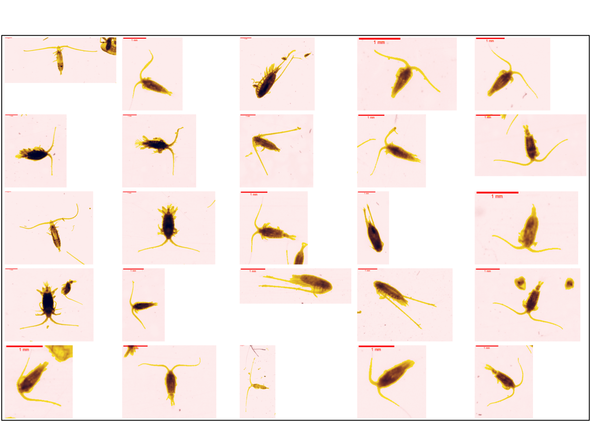

4 Level 2 : advanced classification
This advanced classification is based on the general level 3 classification proposed in this guide. Some knowledge of biology is required to effectively classify vignettes into the … groups proposed.
4.1 Plankton_crustacea
vigns <- fs::dir_ls(
here::here(training_dir, "Plankton_crustacea"),
type = "file", glob = "*.png", recurse = TRUE)The group plankton_crustacea includes the crustaceans. Typical organisms in this group are copepods, krill, crabs, shrimps, gammarids
Within the plankton_crustacea group, it is possible to differentiate between gymnoplea, podoplea, branchiopoda and malacostraca.
4.1.1 Gymnoplea
Gymnoplea are copepods, which are a well-studied class of crustaceans. These copepods have antennules longer than the cephalosome and the urosome smaller than the prosoma. The calanoida below shows these morphological features (Figure 4.1).
Figure 4.2 shows a set of individuals in this group.
plot_vignettes(vigns, group = "Gymnoplea", nx = 5, ny = 5)
More details on this suborder of copepods can be found in the Section 5.1.1.
4.1.2 Podoplea
Podoplea is composed by the order of cyclopoida and the order of Harpacticoida. These organisms have a great morphological diversity. The antennules are not longer than the prosome and urosome. The urosome is as long as the prosome or not clearly distinguished from the prosome. A copepod that does not look like a gymnoplea belongs to the podoplea.
plot_vignettes(vigns, group = "Podoplea", nx = 5, ny = 5)More details on this suborder of copepods can be found in the Section 5.1.2.
4.1.3 Branchiopoda
Among the branchiopoda are the Evadne (Section 5.2.1.1.1) and podon (Section 5.2.1.1.2). These small crustaceans have a very clear shells on the vignettes
plot_vignettes(vigns, group = "Branchiopoda", nx = 4, ny = 3)4.1.4 Malacostraca
Among the malacostraca are the decapods (crabs, lobsters, shrimps,…), the euphausiids (krill), the amphipods (gammarids), the isopods and the stomatopods (the mantis shrimps). This group of crustaceans corresponds to the main idea that novices have of crustaceans (Figure 4.5).
plot_vignettes(vigns, group = "Malacostraca", nx = 5, ny = 5)More details on class of Malacostraca can be found in the Section 5.2.2.
4.2 Plankton_dark
The plankton_dark group includes darkened organisms in the vignettes. This group consists of molluscs (bivalves and gastropods), annelids and actinopterygians (fish larvae).
vigns <- fs::dir_ls(
here::here(training_dir, "Plankton_dark"),
type = "file", glob = "*.png", recurse = TRUE)4.2.1 Mollusca
This group includes the bivalvia and gastropoda. All the organisms studied have shells ( Figure 4.6 ).
Cavoliniidae and creseis are easily recognisable individuals among molluscs
plot_vignettes(vigns, group = "Mollusca", nx = 4, ny = 4)More details on this phylum of mollusca can be found in the Section 6.1.
4.2.2 Annelida
This group includes worms. Annelida are vermiform and metamerised body in several segments along a longitudinal axis ( Figure 4.7 ). Polychaetes are mainly found in the marine environment
plot_vignettes(vigns, group = "Annelida", nx = 3, ny = 3)More details on this phylum of annelida can be found in the Section 6.2.
4.2.3 Actinopterygii (fish larvae)
This group includes fish larvae. These vertebrates are easily identifiable. This group includes fish larvae. These vertebrates are easily identifiable. The most detailed level of the proposed classification allows differentiation between the different developmental stages of the organisms.
plot_vignettes(vigns, group = "Actinopterygii", nx = 4, ny = 5
)More details on this class of Actinopterygii can be found in the Section 6.3.1.1.
4.3 Plankton_gelatinous
The plankton_gelatinous group includes organisms that are clear in the vignettes. These organisms have a gelatinous body like jellyfish for example. These organisms are quite fragile and are broken during collection. This can make identification more complex.
vigns <- fs::dir_ls(
here::here(training_dir, "Plankton_gelatinous"),
type = "file", glob = "*.png", recurse = TRUE)4.3.1 Thaliacea
These organisms are transparent, which is indicated by the very light yellow on the vignettes (Figure 4.9). The band of muscle present in the Doliolida (Section 7.1.1.3) is not present. There is, however, the presence of muscle (Section 7.1.1.1).
plot_vignettes(vigns, group = "Thaliacea", nx = 4, ny = 4)4.3.2 Appendicularia
The appendicularia are vermiform. There are two distinct parts: the head (darker) and the tail (longer and lighter) (Figure 4.10). Despite their vermiform appearance, they are quite different from annelida.
plot_vignettes(vigns, group = "Appendicularia", nx = 5, ny = 5)4.3.3 Chaetognatha
Chaetognatha are also wormlike. These predators have the particularity of having hooks on the front of their head (Figure 4.11). After observing a head of these organisms. It is no longer possible to get the wrong group.
plot_vignettes(vigns, group = "Chaetognatha", nx = 3, ny = 3)4.3.4 Cnidaria
Cnidarians include corals, anemones and medusas. Only individuals living in the water body are considered in this study. Gelatinous organisms are lightly coloured in the vignettes. These are mainly jellyfish ( Figure 4.12 ).
library(flow)
vigns %>.%
stringr::str_subset(., "Siphonophorae", negate = TRUE) %>.%
plot_vignettes(., group = "Cnidaria", nx = 5, ny = 5)plot_vignettes(vigns, group = "Siphonophorae", nx = 5, ny = 5)